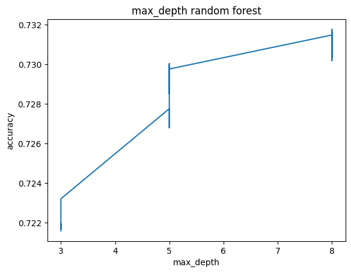
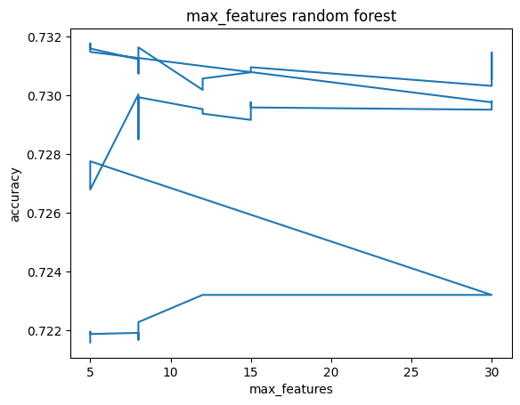
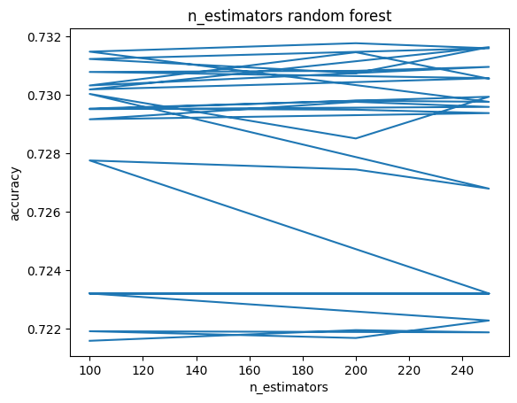
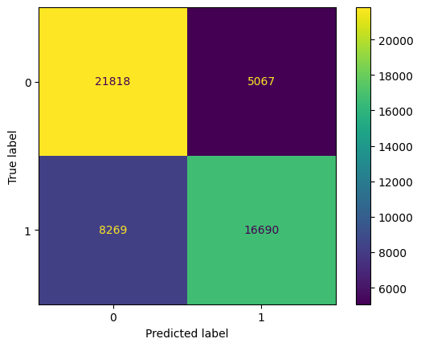
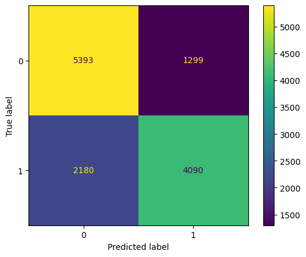

import pandas as pd
import seaborn as sns
import matplotlib.pyplot as plt
from sklearn import tree
from IPython.display import Image
import numpy as np
from sklearn.metrics import accuracy_score
from sklearn.metrics import precision_score
from sklearn.metrics import recall_score
from sklearn.model_selection import train_test_split
from sklearn.ensemble import RandomForestClassifier
from sklearn.model_selection import GridSearchCV
import matplotlib.pyplot as pltcardio = pd.read_csv('../Data/01-modified-data/cardiovascular_numeric_final.csv')
cardio = cardio.drop(cardio.columns[0], axis=1)
cardio.head()| id | age | gender | height | weight | ap_hi | ap_lo | cholesterol | gluc | smoke | alco | active | cardio | bmi | |
|---|---|---|---|---|---|---|---|---|---|---|---|---|---|---|
| 0 | 0 | 50 | 2 | 168 | 62 | 110 | 80 | 1 | 1 | 0 | 0 | 1 | 0 | 21.97 |
| 1 | 1 | 55 | 1 | 156 | 85 | 140 | 90 | 3 | 1 | 0 | 0 | 1 | 1 | 34.93 |
| 2 | 2 | 52 | 1 | 165 | 64 | 130 | 70 | 3 | 1 | 0 | 0 | 0 | 1 | 23.51 |
| 3 | 3 | 48 | 2 | 169 | 82 | 150 | 100 | 1 | 1 | 0 | 0 | 1 | 1 | 28.71 |
| 4 | 4 | 48 | 1 | 156 | 56 | 100 | 60 | 1 | 1 | 0 | 0 | 0 | 0 | 23.01 |
cardio_x = cardio.drop(columns=['cardio','id'])
cardio_y = cardio[['cardio']]
cardio_y = np.ravel(cardio_y)param_grid = {
'max_features': [5,8,12,15,30],
'max_depth': [3, 5, 8],
'n_estimators': [100, 200, 250]
}x_train, x_test, y_train, y_test = train_test_split(cardio_x, cardio_y, test_size=0.2, random_state=12)rf_classifier = RandomForestClassifier()
grid_search = GridSearchCV(rf_classifier, param_grid, cv=4, scoring='accuracy')
grid_search.fit(x_train, y_train)
results = pd.DataFrame(grid_search.cv_results_)
results| mean_fit_time | std_fit_time | mean_score_time | std_score_time | param_max_depth | param_max_features | param_n_estimators | params | split0_test_score | split1_test_score | split2_test_score | split3_test_score | mean_test_score | std_test_score | rank_test_score | |
|---|---|---|---|---|---|---|---|---|---|---|---|---|---|---|---|
| 0 | 0.787074 | 0.007200 | 0.035596 | 0.000105 | 3 | 5 | 100 | {'max_depth': 3, 'max_features': 5, 'n_estimat... | 0.720932 | 0.722784 | 0.724173 | 0.718463 | 0.721588 | 0.002139 | 45 |
| 1 | 1.545514 | 0.004320 | 0.069910 | 0.000647 | 3 | 5 | 200 | {'max_depth': 3, 'max_features': 5, 'n_estimat... | 0.720855 | 0.723092 | 0.725176 | 0.718695 | 0.721954 | 0.002424 | 41 |
| 2 | 1.936487 | 0.015982 | 0.086350 | 0.000170 | 3 | 5 | 250 | {'max_depth': 3, 'max_features': 5, 'n_estimat... | 0.720932 | 0.722938 | 0.724558 | 0.719080 | 0.721877 | 0.002063 | 43 |
| 3 | 1.064351 | 0.004957 | 0.035183 | 0.000275 | 3 | 8 | 100 | {'max_depth': 3, 'max_features': 8, 'n_estimat... | 0.720701 | 0.723324 | 0.725330 | 0.718309 | 0.721916 | 0.002652 | 42 |
| 4 | 2.128837 | 0.010925 | 0.070401 | 0.001423 | 3 | 8 | 200 | {'max_depth': 3, 'max_features': 8, 'n_estimat... | 0.720701 | 0.723170 | 0.725021 | 0.717846 | 0.721684 | 0.002695 | 44 |
| 5 | 2.672131 | 0.016506 | 0.085684 | 0.000097 | 3 | 8 | 250 | {'max_depth': 3, 'max_features': 8, 'n_estimat... | 0.720701 | 0.725407 | 0.725407 | 0.717614 | 0.722282 | 0.003310 | 40 |
| 6 | 1.451854 | 0.002488 | 0.033621 | 0.000449 | 3 | 12 | 100 | {'max_depth': 3, 'max_features': 12, 'n_estima... | 0.722475 | 0.724327 | 0.726410 | 0.719620 | 0.723208 | 0.002496 | 31 |
| 7 | 2.903286 | 0.002093 | 0.065900 | 0.000445 | 3 | 12 | 200 | {'max_depth': 3, 'max_features': 12, 'n_estima... | 0.722475 | 0.724327 | 0.726410 | 0.719620 | 0.723208 | 0.002496 | 31 |
| 8 | 3.632230 | 0.007120 | 0.081526 | 0.000799 | 3 | 12 | 250 | {'max_depth': 3, 'max_features': 12, 'n_estima... | 0.722475 | 0.724327 | 0.726410 | 0.719620 | 0.723208 | 0.002496 | 31 |
| 9 | 1.452749 | 0.006278 | 0.033584 | 0.000312 | 3 | 15 | 100 | {'max_depth': 3, 'max_features': 15, 'n_estima... | 0.722475 | 0.724327 | 0.726410 | 0.719620 | 0.723208 | 0.002496 | 31 |
| 10 | 2.906101 | 0.005509 | 0.065403 | 0.000195 | 3 | 15 | 200 | {'max_depth': 3, 'max_features': 15, 'n_estima... | 0.722475 | 0.724327 | 0.726410 | 0.719620 | 0.723208 | 0.002496 | 31 |
| 11 | 3.628169 | 0.006186 | 0.082443 | 0.000961 | 3 | 15 | 250 | {'max_depth': 3, 'max_features': 15, 'n_estima... | 0.722475 | 0.724327 | 0.726410 | 0.719620 | 0.723208 | 0.002496 | 31 |
| 12 | 1.454576 | 0.001384 | 0.034079 | 0.000585 | 3 | 30 | 100 | {'max_depth': 3, 'max_features': 30, 'n_estima... | 0.722475 | 0.724327 | 0.726410 | 0.719620 | 0.723208 | 0.002496 | 31 |
| 13 | 2.930941 | 0.036049 | 0.066202 | 0.000771 | 3 | 30 | 200 | {'max_depth': 3, 'max_features': 30, 'n_estima... | 0.722475 | 0.724327 | 0.726410 | 0.719620 | 0.723208 | 0.002496 | 31 |
| 14 | 3.653693 | 0.050620 | 0.081528 | 0.000866 | 3 | 30 | 250 | {'max_depth': 3, 'max_features': 30, 'n_estima... | 0.722475 | 0.724327 | 0.726410 | 0.719620 | 0.723208 | 0.002496 | 31 |
| 15 | 1.121718 | 0.010288 | 0.045798 | 0.000254 | 5 | 5 | 100 | {'max_depth': 5, 'max_features': 5, 'n_estimat... | 0.727799 | 0.728416 | 0.731116 | 0.723710 | 0.727760 | 0.002651 | 28 |
| 16 | 2.235073 | 0.005686 | 0.090693 | 0.001410 | 5 | 5 | 200 | {'max_depth': 5, 'max_features': 5, 'n_estimat... | 0.726179 | 0.729033 | 0.731039 | 0.723555 | 0.727452 | 0.002836 | 29 |
| 17 | 2.788049 | 0.010582 | 0.111738 | 0.000326 | 5 | 5 | 250 | {'max_depth': 5, 'max_features': 5, 'n_estimat... | 0.725870 | 0.727490 | 0.731194 | 0.722629 | 0.726796 | 0.003084 | 30 |
| 18 | 1.604124 | 0.008925 | 0.045737 | 0.000392 | 5 | 8 | 100 | {'max_depth': 5, 'max_features': 8, 'n_estimat... | 0.730191 | 0.731965 | 0.733354 | 0.724635 | 0.730036 | 0.003314 | 16 |
| 19 | 3.218563 | 0.009933 | 0.090066 | 0.000229 | 5 | 8 | 200 | {'max_depth': 5, 'max_features': 8, 'n_estimat... | 0.728647 | 0.728956 | 0.732428 | 0.724018 | 0.728512 | 0.002989 | 27 |
| 20 | 4.028593 | 0.011710 | 0.112411 | 0.000477 | 5 | 8 | 250 | {'max_depth': 5, 'max_features': 8, 'n_estimat... | 0.730191 | 0.732197 | 0.733817 | 0.723555 | 0.729940 | 0.003904 | 17 |
| 21 | 2.253983 | 0.003733 | 0.045479 | 0.000471 | 5 | 12 | 100 | {'max_depth': 5, 'max_features': 12, 'n_estima... | 0.728956 | 0.730653 | 0.733740 | 0.724790 | 0.729535 | 0.003232 | 22 |
| 22 | 4.501898 | 0.004020 | 0.089598 | 0.000829 | 5 | 12 | 200 | {'max_depth': 5, 'max_features': 12, 'n_estima... | 0.728802 | 0.730422 | 0.733585 | 0.725176 | 0.729496 | 0.003030 | 24 |
| 23 | 5.626368 | 0.010844 | 0.111776 | 0.000983 | 5 | 12 | 250 | {'max_depth': 5, 'max_features': 12, 'n_estima... | 0.728647 | 0.730422 | 0.733200 | 0.725253 | 0.729380 | 0.002883 | 25 |
| 24 | 2.278674 | 0.044276 | 0.045675 | 0.000451 | 5 | 15 | 100 | {'max_depth': 5, 'max_features': 15, 'n_estima... | 0.728570 | 0.730036 | 0.733817 | 0.724250 | 0.729168 | 0.003425 | 26 |
| 25 | 12.831333 | 14.452285 | 0.089542 | 0.000667 | 5 | 15 | 200 | {'max_depth': 5, 'max_features': 15, 'n_estima... | 0.728802 | 0.730808 | 0.734357 | 0.725098 | 0.729766 | 0.003350 | 19 |
| 26 | 5.616060 | 0.017365 | 0.112423 | 0.001731 | 5 | 15 | 250 | {'max_depth': 5, 'max_features': 15, 'n_estima... | 0.728879 | 0.730885 | 0.733508 | 0.725098 | 0.729593 | 0.003070 | 21 |
| 27 | 2.255050 | 0.004228 | 0.045844 | 0.000354 | 5 | 30 | 100 | {'max_depth': 5, 'max_features': 30, 'n_estima... | 0.728647 | 0.730653 | 0.734280 | 0.724481 | 0.729515 | 0.003539 | 23 |
| 28 | 4.509898 | 0.007295 | 0.089927 | 0.001001 | 5 | 30 | 200 | {'max_depth': 5, 'max_features': 30, 'n_estima... | 0.728879 | 0.730885 | 0.734048 | 0.725407 | 0.729805 | 0.003137 | 18 |
| 29 | 5.641994 | 0.006853 | 0.112222 | 0.001534 | 5 | 30 | 250 | {'max_depth': 5, 'max_features': 30, 'n_estima... | 0.728647 | 0.731116 | 0.733894 | 0.725407 | 0.729766 | 0.003127 | 19 |
| 30 | 1.646228 | 0.007944 | 0.063218 | 0.000388 | 8 | 5 | 100 | {'max_depth': 8, 'max_features': 5, 'n_estimat... | 0.732274 | 0.731811 | 0.735437 | 0.726410 | 0.731483 | 0.003244 | 4 |
| 31 | 3.286398 | 0.008687 | 0.125364 | 0.000620 | 8 | 5 | 200 | {'max_depth': 8, 'max_features': 5, 'n_estimat... | 0.731194 | 0.732274 | 0.737134 | 0.726487 | 0.731772 | 0.003784 | 1 |
| 32 | 4.106233 | 0.009053 | 0.156807 | 0.000953 | 8 | 5 | 250 | {'max_depth': 8, 'max_features': 5, 'n_estimat... | 0.730885 | 0.732351 | 0.736517 | 0.726641 | 0.731599 | 0.003530 | 3 |
| 33 | 2.451331 | 0.042319 | 0.063466 | 0.000163 | 8 | 8 | 100 | {'max_depth': 8, 'max_features': 8, 'n_estimat... | 0.729882 | 0.732891 | 0.736517 | 0.725638 | 0.731232 | 0.003994 | 6 |
| 34 | 123.336405 | 205.432968 | 0.121017 | 0.000985 | 8 | 8 | 200 | {'max_depth': 8, 'max_features': 8, 'n_estimat... | 0.730268 | 0.731348 | 0.735514 | 0.725870 | 0.730750 | 0.003432 | 10 |
| 35 | 5.889385 | 0.009550 | 0.154141 | 0.001128 | 8 | 8 | 250 | {'max_depth': 8, 'max_features': 8, 'n_estimat... | 0.730731 | 0.733817 | 0.736209 | 0.725793 | 0.731637 | 0.003893 | 2 |
| 36 | 3.377931 | 0.003331 | 0.061273 | 0.000684 | 8 | 12 | 100 | {'max_depth': 8, 'max_features': 12, 'n_estima... | 0.728725 | 0.731734 | 0.736209 | 0.724095 | 0.730191 | 0.004413 | 15 |
| 37 | 6.813731 | 0.021899 | 0.122595 | 0.001634 | 8 | 12 | 200 | {'max_depth': 8, 'max_features': 12, 'n_estima... | 0.727567 | 0.732351 | 0.735591 | 0.726256 | 0.730441 | 0.003740 | 13 |
| 38 | 8.585203 | 0.019440 | 0.152713 | 0.001746 | 8 | 12 | 250 | {'max_depth': 8, 'max_features': 12, 'n_estima... | 0.728725 | 0.733045 | 0.736363 | 0.724173 | 0.730576 | 0.004583 | 11 |
| 39 | 3.464429 | 0.049286 | 0.061888 | 0.000320 | 8 | 15 | 100 | {'max_depth': 8, 'max_features': 15, 'n_estima... | 0.728493 | 0.733045 | 0.736286 | 0.725330 | 0.730789 | 0.004195 | 9 |
| 40 | 27.938821 | 36.788776 | 0.120146 | 0.001259 | 8 | 15 | 200 | {'max_depth': 8, 'max_features': 15, 'n_estima... | 0.728262 | 0.732737 | 0.736672 | 0.725638 | 0.730827 | 0.004222 | 8 |
| 41 | 8.495591 | 0.045663 | 0.151279 | 0.001280 | 8 | 15 | 250 | {'max_depth': 8, 'max_features': 15, 'n_estima... | 0.728879 | 0.732660 | 0.736363 | 0.725947 | 0.730962 | 0.003922 | 7 |
| 42 | 3.430128 | 0.003680 | 0.061662 | 0.000515 | 8 | 30 | 100 | {'max_depth': 8, 'max_features': 30, 'n_estima... | 0.727722 | 0.732582 | 0.735900 | 0.725098 | 0.730326 | 0.004191 | 14 |
| 43 | 6.864778 | 0.008388 | 0.121984 | 0.000874 | 8 | 30 | 200 | {'max_depth': 8, 'max_features': 30, 'n_estima... | 0.729033 | 0.733971 | 0.736903 | 0.725947 | 0.731464 | 0.004249 | 5 |
| 44 | 8.625078 | 0.051382 | 0.152690 | 0.001218 | 8 | 30 | 250 | {'max_depth': 8, 'max_features': 30, 'n_estima... | 0.727876 | 0.733817 | 0.735900 | 0.724635 | 0.730557 | 0.004512 | 12 |
fig, ax = plt.subplots()
# Plotting the data
ax.plot(results['param_max_depth'], results['mean_test_score']) # Line plot
# Adding title and labels
ax.set_title('max_depth random forest')
ax.set_xlabel('max_depth')
ax.set_ylabel('accuracy')Text(0, 0.5, 'accuracy')
fig, ax = plt.subplots()
# Plotting the data
ax.plot(results['param_max_features'], results['mean_test_score']) # Line plot
# Adding title and labels
ax.set_title('max_features random forest')
ax.set_xlabel('max_features')
ax.set_ylabel('accuracy')Text(0, 0.5, 'accuracy')
fig, ax = plt.subplots()
# Plotting the data
ax.plot(results['param_n_estimators'], results['mean_test_score']) # Line plot
# Adding title and labels
ax.set_title('n_estimators random forest')
ax.set_xlabel('n_estimators')
ax.set_ylabel('accuracy')Text(0, 0.5, 'accuracy')
best_params = grid_search.best_params_
best_params{'max_depth': 8, 'max_features': 5, 'n_estimators': 200}best_rf_model = RandomForestClassifier(**best_params)
best_rf_model.fit(x_train, y_train)
feature_importances = best_rf_model.feature_importances_plt.figure(figsize=(8, 6))
plt.barh(x_train.columns, feature_importances)
plt.xlabel('Feature Importance')
plt.title('Variable Importance')
plt.show()
from sklearn import metrics
def confusion_plot(y_data,y_pred):
accuracy = metrics.accuracy_score(y_data, y_pred)
print('ACCURACY:',accuracy)
precision_0 = metrics.precision_score(y_data, y_pred,pos_label=0)
recall_0 = metrics.recall_score(y_data, y_pred,pos_label=0)
print('POSITIVE RECALL (Y=0):',recall_0)
print('POSITIVE PRECISION (Y=0):',precision_0)
precision_1 = metrics.precision_score(y_data, y_pred,pos_label=1)
recall_1 = metrics.recall_score(y_data, y_pred,pos_label=1)
print('POSITIVE RECALL (Y=1):',recall_1)
print('POSITIVE PRECISION (Y=1):',precision_1)
cm = metrics.confusion_matrix(y_data, y_pred, labels=[0,1])
print(cm)
disp = metrics.ConfusionMatrixDisplay(confusion_matrix=cm,
display_labels=[0,1])
disp.plot()
plt.show()yp_train=best_rf_model.predict(x_train)
yp_test=best_rf_model.predict(x_test)print("------TRAINING------")
confusion_plot(y_train,yp_train)
print("------TEST------")
confusion_plot(y_test,yp_test)------TRAINING------
ACCURACY: 0.7427667618239333
POSITIVE RECALL (Y=0): 0.8115305932676213
POSITIVE PRECISION (Y=0): 0.7251636919599828
POSITIVE RECALL (Y=1): 0.6686966625265436
POSITIVE PRECISION (Y=1): 0.7671094360435722
[[21818 5067]
[ 8269 16690]]
------TEST------
ACCURACY: 0.7316000617188706
POSITIVE RECALL (Y=0): 0.8058876270173342
POSITIVE PRECISION (Y=0): 0.7121352172190677
POSITIVE RECALL (Y=1): 0.6523125996810207
POSITIVE PRECISION (Y=1): 0.7589534236407497
[[5393 1299]
[2180 4090]]
